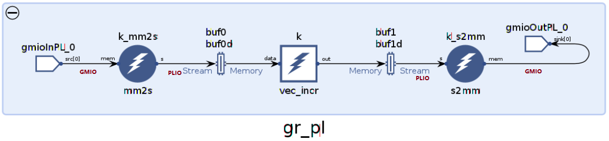

AI Engine GMIO Tutorial |
PL GMIO Programming Model¶
It is possible to make PL-to-DDR memory or DDR memory to PL connections witihin an AI Engine graph. To support this, PL kernels with an AXI4-Stream interface and an AXI4 Master interface are required inside the graph. In this example, two PL kernels (mm2s and s2mm) are used to connect to one AI Engine kernel in the graph. The AXI4-Stream interfaces of mm2s and s2mm are connected to the AI Engine window or stream data interfaces, and the AXI4 Master interfaces of mm2s and s2mm are connected to the GMIO ports of the graph.
Step 1 - PL Kernels with Fixed Size of Data and Step 2 - PL Kernels with Variable Size of Data, introduce the PL kernels along with the Adaptive Data Flow (ADF) APIs that take care of buffer object (BO) allocations and data transfers. The graph for the example is as shown in the following figure:

Step 1 - PL Kernels with Fixed Size of Data¶
This step introduces the PL GMIO specification, PL kernels with fixed size of data in the graph, and its programming model. Change the directory to single_pl_gmio/step1. Look at the graph specification in aie/graph_pl.h.
class mygraph_pl: public adf::graph
{
private:
adf::kernel k;
adf::kernel k_mm2s;
adf::kernel k_s2mm;
public:
adf::port<adf::direction::inout> inoutMem;
adf::port<adf::direction::in> inMem;
mygraph_pl()
{
k = adf::kernel::create(vec_incr);
adf::source(k) = "vec_incr.cc";
adf::runtime<adf::ratio>(k)= 1;
k_mm2s= adf::kernel::create(mm2s);
adf::source(k_mm2s) = "hls/mm2s.cpp";
adf::fabric<adf::pl>(k_mm2s);
k_s2mm = adf::kernel::create(s2mm);
adf::source(k_s2mm) = "hls/s2mm.cpp";
adf::fabric<adf::pl>(k_s2mm);
adf::connect<adf::gmem>(inMem,k_mm2s.in[0]);
adf::connect<adf::stream,adf::window<1024>>(k_mm2s.out[0],k.in[0]);
adf::connect<adf::window<1024>,adf::stream>(k.out[0],k_s2mm.in[0]);
adf::connect<adf::gmem>(k_s2mm.inout[0],inoutMem);
};
};
Two PL kernels are inside the graph, mm2s and s2mm. They are connected to the AI Engine kernel with the streaming interface. They are connected to the input and inout ports with type adf::gmem, and the input and inout ports of the graph are GMIO. It tells the AI Engine tools to automatically use a NoC Master Unit (NMU) for Direct Memory Access (DMA) transactions.
Run the following make command to compile the graph (libadf.a):
make aie
Note: The mm2s and s2mm have an AXI4-Lite interface for control. To support PL kernel with AXI4-Lite interfaces inside the graph, the option --pl-axi-lite=true is required for the AI Engine compiler.
Then open the compile result with Vitis™ Analyzer:
vitis_analyzer ./Work/graph.aiecompile_summary
In the Vitis Analyzer, click the graph tab, and the graph is displayed as follows:
It can be seen that the PL kernels mm2s and s2mm are between GMIOs and the AI Engine kernel, and there is a PLIO between each PL kernel and AI Engine kernel.
The reference code for HLS modules mm2s (aie/hls/mm2s.cpp) and s2mm (aie/hls/s2mm.cpp) is as follows:
void mm2s(const ap_int<128>* mem, hls::stream<ap_axis<128, 0, 0, 0> >& s) {
#pragma HLS INTERFACE m_axi port=mem offset=slave bundle=gmem
#pragma HLS interface axis port=s
#pragma HLS INTERFACE s_axilite port=mem bundle=control
#pragma HLS interface s_axilite port=return bundle=control
for(int i = 0; i < 128; i++) {//2048 Bytes per run
#pragma HLS PIPELINE II=1 enable_flush
ap_axis<128, 0, 0, 0> x;
x.data=mem[i];
x.keep=-1;
x.last=0;
s.write(x);
}
}
void s2mm(ap_int<128>* mem, hls::stream<ap_axis<128, 0, 0, 0> >& s) {
#pragma HLS INTERFACE m_axi port=mem offset=slave bundle=gmem
#pragma HLS interface axis port=s
#pragma HLS INTERFACE s_axilite port=mem bundle=control
#pragma HLS interface s_axilite port=return bundle=control
for(int i = 0; i < 128; i++) {//2048 Bytes per run
#pragma HLS PIPELINE II=1 enable_flush
ap_axis<128, 0, 0, 0> x = s.read();
mem[i] = x.data;
}
}
Note: The size of data transferred per invocation for mm2s and s2mm is 2048 bytes. It must match the data needed or produced by AI Engine per graph::run API call. In the graph, we can see the window size for AI Engine kernel is 1024 bytes. This means that each of the two iterations of AI Engine kernel matches one invocation of PL kernel.
Look at the main function in aie/graph.cpp:
GMIO gmioInPL("gmioInPL_0", 256, 1000);
GMIO gmioOutPL("gmioOutPL_0", 256, 1000);
adf::simulation::platform<1,1> platform(&gmioInPL,&gmioOutPL);
mygraph_pl gr_pl;
adf::connect<> c0(platform.src[0], gr_pl.inMem);
adf::connect<> c1(gr_pl.inoutMem,platform.sink[0]);
const int ITERATION=2;
const int BLOCK_SIZE_in_Bytes=2048;
const int TOTAL_REPEAT=4;
int main(int argc, char ** argv) {
gr_pl.init();
int error=0;
adf::return_code ret;
int32* inMem;
int32* outMem;
inMem=(int32*)GMIO::malloc(BLOCK_SIZE_in_Bytes);
outMem=(int32*)GMIO::malloc(BLOCK_SIZE_in_Bytes);
for(int iter=0;iter<TOTAL_REPEAT;iter++){
//pre-processing
for(int j=0;j<BLOCK_SIZE_in_Bytes/sizeof(int32);j++){
inMem[j]=j+iter;
}
ret=gmioInPL.pl_gm(inMem, BLOCK_SIZE_in_Bytes);
if(ret!=adf::ok){
std::cout<<"GMIO pl_gm error"<<std::endl;
return ret;
}
ret=gmioOutPL.pl_gm(outMem, BLOCK_SIZE_in_Bytes);
std::cout<<"GMIO::pl_gm enqueing completed"<<std::endl;
ret=gr_pl.run(ITERATION);
ret=gr_pl.wait();
std::cout<<"Graph PL run end"<<std::endl;
//post-processing
for(int j=0;j<BLOCK_SIZE_in_Bytes/sizeof(int32);j++){
if(outMem[j]!=j+iter+1){
std::cout<<"ERROR:dout["<<j<<"]="<<outMem[j]<<std::endl;
error++;
}
}
}
GMIO::free(inMem);
GMIO::free(outMem);
}
This example declares two GMIO objects, gmioInPL and gmioOutPL. The constructor specifies the logical name of the GMIO, the burst length of the memory-mapped AXI4 transaction, and the required bandwidth (in MB/s).
Note: The burst length is not used for PL GMIO. The number specified here is just for syntax compliance for the GMIO constructor.
inMem and outMem must be allocated using GMIO::malloc. In each iteration of the main for loop, the data is pre-processed. Then GMIO::pl_gm is used to specify the input buffer and output buffer for the PL GMIO data transfers. graph::run is called after GMIO::pl_gm to start the PL GMIO data transfers. Note that ITERATION is 2 in gr_pl.run(ITERATION).
One important difference between the PL GMIO and the AI Engine GMIO is that graph::run() must be called after GMIO::pl_gm for the PL GMIO. However, for the AI Engine GMIO, graph::run() can be called before or after GMIO operations (GMIO::gm2aie, GMIO::aie2gm, GMIO::gm2aie_nb, and GMIO::aie2gm_nb). After graph::run(), graph::wait() can be called to wait for the graph to complete. Thus, the GMIO output to DDR memory has also been synchronized. Then post-processing of DDR memory data can be done. After all the iterations are complete, GMIO::free must be called to free the allocated memory.
Note: Unlike AI Engine GMIO, there is no GMIO::wait for PL GMIO.
Run in Hardware¶
To make GMIO work in hardware flow, the following code can be added to main function before graph execution and GMIO data transfer:
#if !defined(__AIESIM__) && !defined(__ADF_FRONTEND__)
#include "adf/adf_api/XRTConfig.h"
#include "experimental/xrt_kernel.h"
// Create XRT device handle for ADF API
char* xclbinFilename = argv[1];
auto dhdl = xrtDeviceOpen(0);//device index=0
xrtDeviceLoadXclbinFile(dhdl,xclbinFilename);
xuid_t uuid;
xrtDeviceGetXclbinUUID(dhdl, uuid);
adf::registerXRT(dhdl, uuid);
#endif
Using the guard macro __AIESIM__ (defined when launching AI Engine simulator) and __ADF_FRONTEND__ (defined when launching x86simulator), the same version of host code can work for the AI Engine simulator and hardware flow.
At the end of the program, close the device using the XRT API xrtDeviceClose().
#if !defined(__AIESIM__) && !defined(__ADF_FRONTEND__)
xrtDeviceClose(dhdl);
#endif
Run the following make command to build image for hardware:
make package TARGET=hw
After the package is done, run the following commands in the Linux prompt after booting Linux from an SD card:
export XILINX_XRT=/usr
chmod 755 host.exe
./host.exe a.xclbin
The host code is self-checking. It will check the output data against the golden data. If the output data matches the golden data after the run is complete, it will print the following:
PASS!
Step 2 - PL Kernels with Variable Size of Data¶
In the previous step, the mm2s and s2mm PL kernels were transfering a fixed number of data. A Runtime parameter (RTP) in the graph can be used to transfer scalar value size to PL kernel, making it send or receive a variable number from memory.
Change the working directory to single_pl_gmio/step2. An example of mm2s (aie/hls/mm2s.cpp) and s2mm (aie/hls/s2mm.cpp) PL kernels are as follows:
void mm2s(const ap_int<128>* mem, hls::stream<ap_axis<128, 0, 0, 0> >& s,const int size) {
#pragma HLS INTERFACE m_axi port=mem offset=slave bundle=gmem
#pragma HLS interface axis port=s
#pragma HLS INTERFACE s_axilite port=mem bundle=control
#pragma HLS interface s_axilite port=return bundle=control
for(int i = 0; i < size; i++) {
#pragma HLS PIPELINE II=1 enable_flush
ap_axis<128, 0, 0, 0> x;
x.data=mem[i];
x.keep=-1;
x.last=0;
s.write(x);
}
}
void s2mm(ap_int<128>* mem, hls::stream<ap_axis<128, 0, 0, 0> >& s,const int size) {
#pragma HLS INTERFACE m_axi port=mem offset=slave bundle=gmem
#pragma HLS interface axis port=s
#pragma HLS INTERFACE s_axilite port=mem bundle=control
#pragma HLS interface s_axilite port=return bundle=control
for(int i = 0; i < size; i++) {
#pragma HLS PIPELINE II=1 enable_flush
ap_axis<128, 0, 0, 0> x = s.read();
mem[i] = x.data;
}
}
In the graph definition (aie/graph_pl.h), two additional adf::async declarations are added for the RTP port of mm2s and s2mm. k_mm2s.in[1] is the second input of mm2s, which is const int size. Besides, the kernel declaration adf::kernel for mm2s and s2mm are moved from private member to public member of the class. This is because access to the RTP port of kernel in the host program is required.
class mygraph_pl: public adf::graph
{
private:
adf::kernel k;
public:
adf::kernel k_mm2s;
adf::kernel k_s2mm;
adf::port<adf::direction::inout> inoutMem;
adf::port<adf::direction::in> inMem;
mygraph_pl()
{
k = adf::kernel::create(vec_incr);
adf::source(k) = "vec_incr.cc";
adf::runtime<adf::ratio>(k)= 1;
k_mm2s= adf::kernel::create(mm2s);
adf::source(k_mm2s) = "hls/mm2s.cpp";
adf::fabric<adf::pl>(k_mm2s);
k_s2mm = adf::kernel::create(s2mm);
adf::source(k_s2mm) = "hls/s2mm.cpp";
adf::fabric<adf::pl>(k_s2mm);
adf::connect<adf::gmem>(inMem,k_mm2s.in[0]);
adf::connect<adf::stream,adf::window<1024>>(k_mm2s.out[0],k.in[0]);
adf::connect<adf::window<1024>,adf::stream>(k.out[0],k_s2mm.in[0]);
adf::connect<adf::gmem>(k_s2mm.inout[0],inoutMem);
adf::async(k_mm2s.in[1]);
adf::async(k_s2mm.in[1]);
};
};
Next, examine host code in aie/graph.cpp. It is similar to Step 1, except that it is needed to update the RTP port of the PL kernels (size for mm2s and s2mm) before starting graph. The API graph::update is used to update graph’s RTP port with a scalar value.
gr_pl.update(gr_pl.k_mm2s.in[1],ITERATION*64);
gr_pl.update(gr_pl.k_s2mm.in[1],ITERATION*64);
ret=gmioInPL.pl_gm(inMem, BLOCK_SIZE_in_Bytes);
if(ret!=adf::ok){
std::cout<<"GMIO pl_gm error"<<std::endl;
return ret;
}
ret=gmioOutPL.pl_gm(outMem, BLOCK_SIZE_in_Bytes);
std::cout<<"GMIO::pl_gm enqueing completed"<<std::endl;
ret=gr_pl.run(ITERATION);
ret=gr_pl.wait();
For information RTP usage, refer to the Versal ACAP AI Engine Programming Environment User Guide (UG1076).
Run in AI Engine Simulator and Hardware¶
Run the following make command to compile graph and run AI Engine simulator:
make aiesim
Run the following make command to build image for hardware:
make package TARGET=hw
After the package is done, run the following commands in the Linux prompt after booting Linux from an SD card:
export XILINX_XRT=/usr
cd /mnt/sd-mmcblk0p1
./host.exe a.xclbin
The host code is self-checking. It will check the output data against the golden data. If the output data matches the golden data after the run is complete, it will print the following:
PASS!
Conclusion¶
In this example, you learned about the following core concepts:
Programming model for PL GMIO
PL Kernel required for PL GMIO in the graph
PL kernels with fixed or variable size, and their usage
Next, review AIE GMIO Performance Profiling.
Copyright© 2020 Xilinx
Licensed under the Apache License, Version 2.0 (the “License”);
you may not use this file except in compliance with the License.
You may obtain a copy of the License at
http://www.apache.org/licenses/LICENSE-2.0
Unless required by applicable law or agreed to in writing, software
distributed under the License is distributed on an “AS IS” BASIS,
WITHOUT WARRANTIES OR CONDITIONS OF ANY KIND, either express or implied.
See the License for the specific language governing permissions and
limitations under the License.
XD007